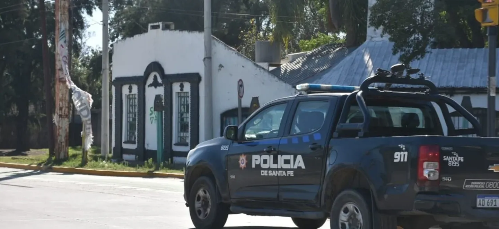

Santa Fe: siete ladrones asaltaron una subcomisaría, maniataron a los policías y les robaron las armas
Sucedió en la localidad de Arroyo Leyes. Los siente delincuentes huyeron en un patrullero y un auto particular con dos armas, un chaleco y otros elementos robados de la dependencia.
Durante la madrugada del jueves, siete delincuentes ingresaron a la subcomisaría de Arroyo Leyes, una localidad ubicada a tan solo 20 kilómetros de la ciudad de Santa Fe y, además de maniatar a los policías de guardia, les robaron las armas, un chaleco antibalas y se llevaron un patrullero. El hecho ocurrió esta madrugada, cuando dos de los ladrones ingresaron al lugar vestidos de policías. Como se hicieron pasar por oficiales, dijeron que necesitaban ayuda porque se les había pinchado un neumático del patrullero, aunque luego, de forma sorpresiva, irrumpieron cinco criminales más. Cuando tomaron control de la situación, les robaron a los policías sus armas reglamentarias, los maniataron y además a uno de ellos le sacaron un chaleco antibalas. Luego, se llevaron el patrullero que estaba estacionado en la puerta de la comisaría y también se metieron en una casa vecina, a cuyos ocupantes les robaron un automóvil Peugeot 206. Para huir, los ladrones tomaron la ruta provincial 1 en el auto particular y en el patrullero. Poco después, el auto de los vecinos fue abandonado por los asaltantes en inmediaciones en el barrio santafesino de Colastiné Norte, en tanto que el patrullero fue hallado en la ciudad de San José del Rincón. A pesar de que se recuperaron los automóviles, los oficiales no lograron capturar a los ladrones, aunque la búsqueda continúa activa.
